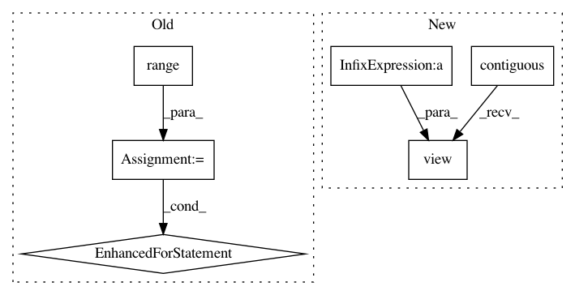

7f4196796a26eddd9cd163bc4892107f8fc05d35,gpytorch/utils/kronecker_product.py,,kp_sym_toeplitz_derivative_quadratic_form,#Any#Any#Any#,152
Before Change
left_vectors_i_j = kronecker_product_toeplitz_matmul(columns[i + 1:], columns[i + 1:],
left_vectors_i_j)
left_vectors_i_j = left_vectors_i_j.contiguous().view(m_i, s, m_right).transpose(0, 1)
for k in range(m_right):
res[i] = res[i] + sym_toeplitz_derivative_quadratic_form(left_vectors_i_j[:, k],
right_vectors_i_j[:, k])
return res
def list_of_indices_and_values_to_sparse(index_matrices, value_matrices, columns):
After Change
left_vectors_i_j = left_vectors_i_j.transpose(0, 1).contiguous().view(m_right, s * m_i)
left_vectors_i_j = kronecker_product_toeplitz_matmul(columns[i + 1:], columns[i + 1:],
left_vectors_i_j)
left_vectors_i_j = left_vectors_i_j.contiguous().view(m_right, s, m_i).transpose(0, 1).contiguous()
res[i] = res[i] + sym_toeplitz_derivative_quadratic_form(left_vectors_i_j.view(s * m_right, m_i),
right_vectors_i_j.view(s * m_right, m_i))
return res
In pattern: SUPERPATTERN
Frequency: 3
Non-data size: 6
Instances
Project Name: cornellius-gp/gpytorch
Commit Name: 7f4196796a26eddd9cd163bc4892107f8fc05d35
Time: 2017-09-08
Author: ruihan.wu14@gmail.com
File Name: gpytorch/utils/kronecker_product.py
Class Name:
Method Name: kp_sym_toeplitz_derivative_quadratic_form
Project Name: cornellius-gp/gpytorch
Commit Name: e5970f0a822c210b2859708b9556878b01c5b59f
Time: 2017-09-09
Author: ruihan.wu14@gmail.com
File Name: gpytorch/utils/kronecker_product.py
Class Name:
Method Name: kronecker_product_toeplitz_matmul
Project Name: maciejkula/spotlight
Commit Name: bc51dbc0c56f68ed30857755026633f78eef1ae8
Time: 2017-08-20
Author: maciej.kula@gmail.com
File Name: spotlight/layers.py
Class Name: BloomEmbedding
Method Name: forward